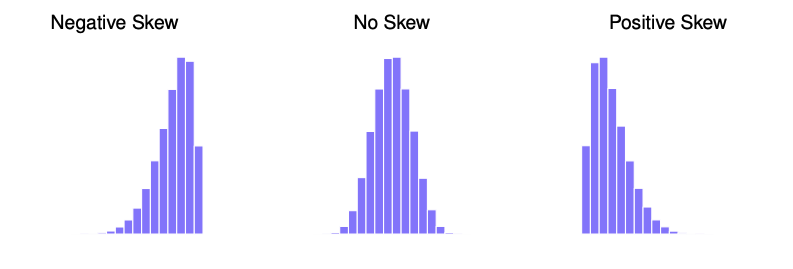
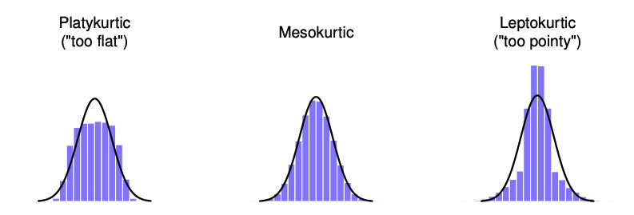

CP Quiz #2
Charts
Categorical data does not have equal spacing between each.
- Use a Frequency table/Relative Frequency table/Contingency Table
- Allow the comparison of percentages(relative frequency)
- Bar Chart
- Use frequencies to compare the height of the bars instead of comparing the numbers
- Pie Chart
- Pictograph
- Use a picture to show the frequency(size/amount of the picture)
Quantitative Data
- Binning to create categories out of the quantitative data
- Frequency tables + Binning
- Don’t have to be equally spaced, but should make sense
- Histogram
- Show the mean/median/mode and have no spaces between the bars
- Shows a skew!!!
Shape of Data
Unimodal = A single mode, the mean and mode are same
Standard Deviation = Skinner distribution if smaller(the distance from mean)
Skew -> shows a larger box in a box plot
- If the box is large then there is a skew as there are the same amount of values in each box just stretched over different range
Histograms + Kernel Densities
A histogram is built up of multiple bins with the frequency of each bin being plotted on the histogram.
- Can use kernel smoothing to create smoother distributions by smoothing out the noise -> density plot
Skew & Kurtosis
There are multiple ways to measure spread:
- Range: Gives the whole spread of the data
- vulnerable to outliers + extremes
- Interquartile Range: Shows the middle half of the data
- Mean Absolute Deviation: Tells how far “on average” the observations are from the mean
- Variance: Tells the average std. squared from the mean
- Standard Deviation: Basically variation but in the units of the data
Skew
The skewness is the measure of asymmetry
- Negatively Skewed: If the values in the lower tail are longer
- Positvely Skewed: If the values in the larger tail are longer

Kurtosis
The pointless of the data set
- Platykurtic: If the values are flat (negative)
- Mesokurtic: If the values are normal (zero)
- Leptokurtic: If the values are pointy (positive)
